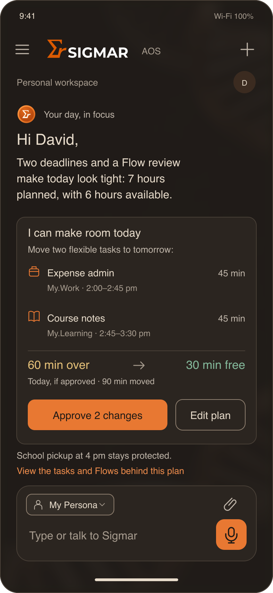

Open all AOS screens: 784 native compositions · Login/register: 192 compositions
Personal AOS: returning to your day
Approved direction with the microphone correction completed. An illustrative day, grounded in the Flutter state-led chat and Sigmar’s personal context and governed action principles.
7 hours planned, 6 hours available. Move two flexible tasks totalling 90 minutes to tomorrow: today goes from 60 minutes over capacity to 30 minutes free. No changes occur before approval.

Review PNGEditable SVGEvidence and example dataFirst-login welcome and menu
Example records, not live account data. Voice input is visible in the idle composer. New screen directions still require a first sample.